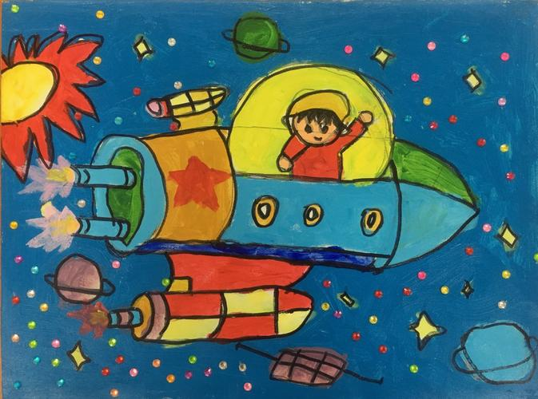
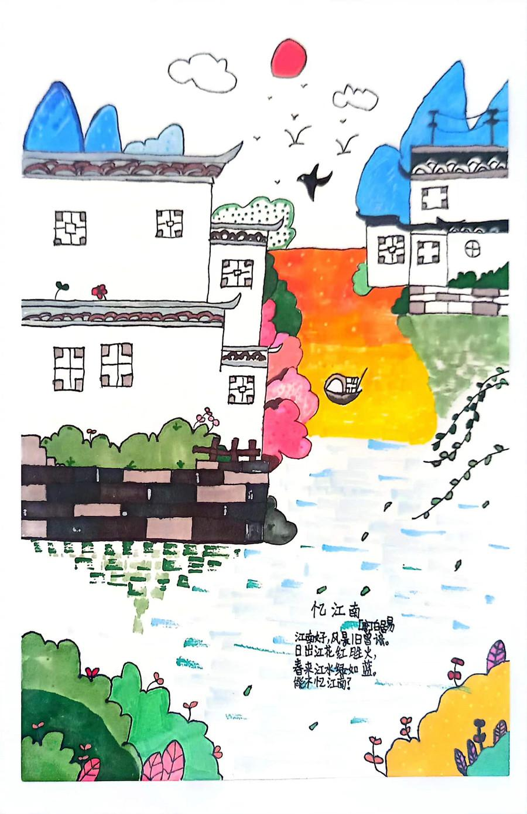
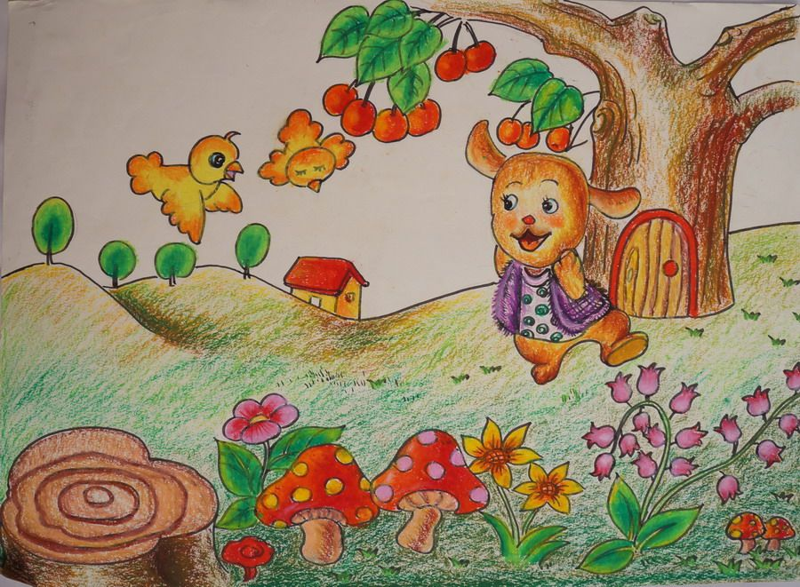
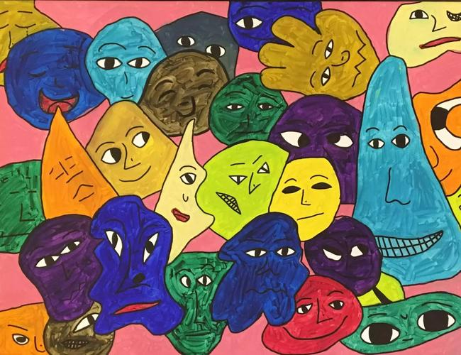
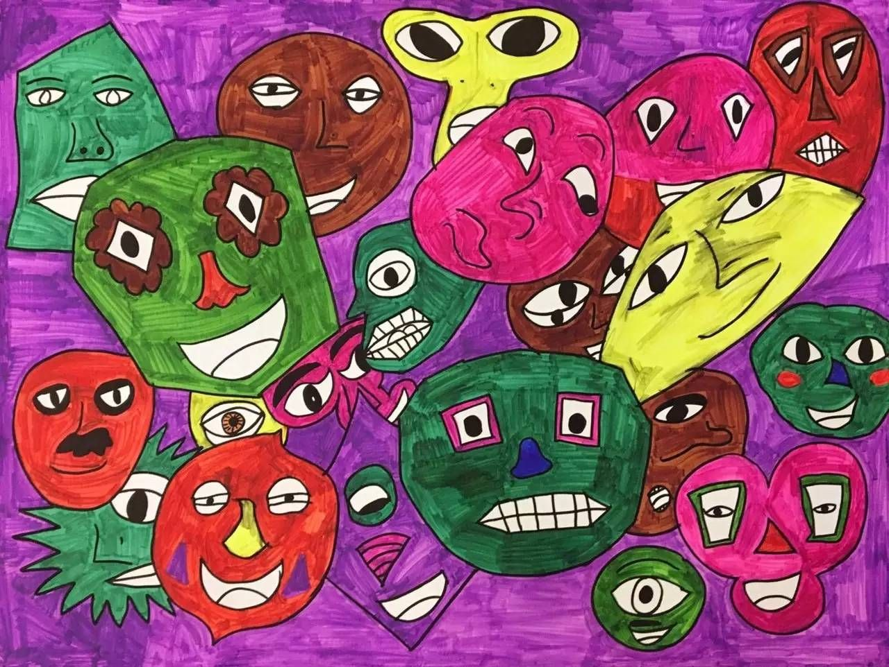
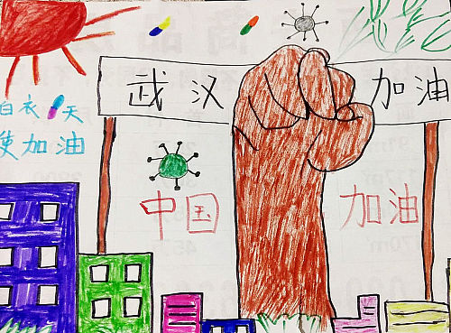

CHILDREN'S GALLERY
儿童作品展
他们不是"不会表达"，只是用另一种语言与世界对话——绘画、手作、音乐、专注的热爱。这里的每一件作品，都值得被认真看见。
作品展廊

遨游太空
一个孩子画下了火箭与漫天星星——他说，长大后要飞到太空去看看。
儿童美术作品
江南好 · 忆江南
诗配画《忆江南》：白墙黛瓦、一叶扁舟。孩子把古诗画成了江南的春天。
供图：北京市海淀区特教中心
我住的城市
太阳、高楼与大树——9 岁男孩瑞瑞笔下的城市，明亮又热闹。
9 岁自闭症孩子瑞瑞的作品
童话森林
大树、小狗与蘑菇——孩子画下一片温柔的小森林，邀请你来做客。
CGTN 报道 · 自闭症儿童画作
斑斓的脸
无数种颜色的面孔挤在一起——他说，每个人都有自己的样子。
儿童美术作品
彩色的表情
夸张的五官与浓烈的颜色，是他表达情绪的方式。
儿童美术作品
武汉加油
30 名自闭症小朋友致敬战疫英雄——他们同样懂爱、同样会感恩。
今日头条公益报道作品
奇想生灵
鱼与龙的奇妙组合，星星落在画里——这是他最珍视的装裱作品。
今日头条报道作品